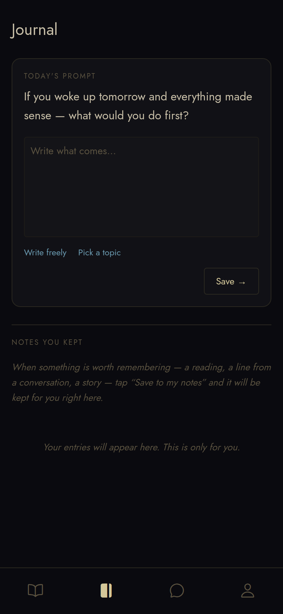
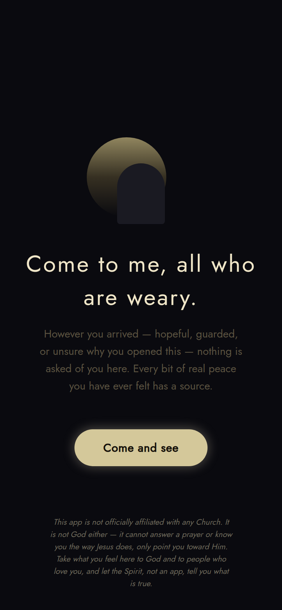

A glimpse inside
How it actually responds
Real moments from the app — gentle, honest, and always pointing onward.




milkb4meat.org
A quiet place to breathe — and to be seen.
An app that meets you exactly where you are, tells you a story worth hearing, and quietly points you toward Christ. No noise. No pressure. Nothing sold.
A two-minute look
What it really is
The very first thing the app does is say it plainly: it is not the Church, and it is not God. It is a helper — a porch, not the house; a lantern, not the Light. It can’t answer a prayer or know you the way Jesus does, only point you toward Him.
From there it does what the Savior did: it tells a short, beautiful story from His life, asks how it left you feeling, and listens. A gentle feed of scripture meets you where you are. A journal keeps whatever touches you. And a real person is always one tap away.
It’s for everyone — whether you’re searching, hurting, curious, or already walking with Christ and want a quieter place than the endless scroll.

A glimpse inside
Real moments from the app — gentle, honest, and always pointing onward.

Be one of the first
The app is in its final testing stage. Here’s how to get it on your phone today.
The iPhone version is in Apple’s final review — it’s nearly here.
No account or payment needed — just a heads-up so we can reach you the day it’s ready.
Android testing is invite-only for now, so this little step is just how Google lets us send it to you.
Free. No ads. Nothing sold. Just a place to breathe — and to be seen.